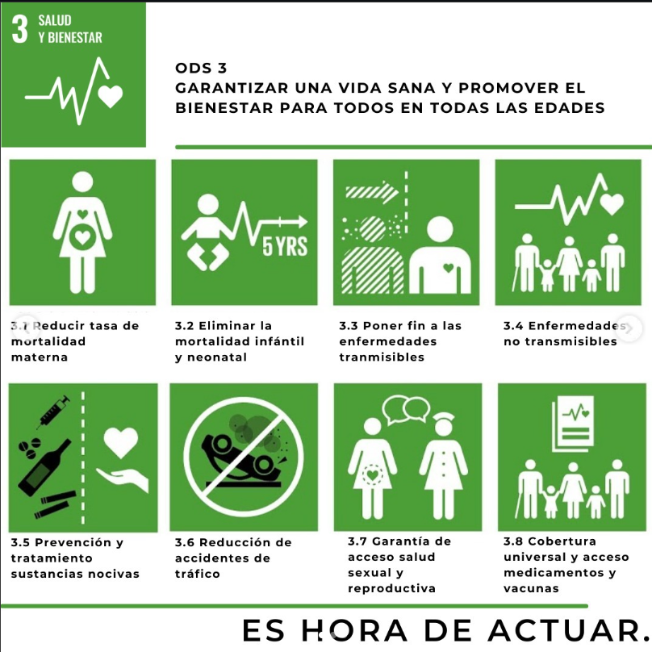

¿Qué son los ODS?
Los Objetivos de desarrollo sostenible (ODS) es un plan de propuestas que se interrelacionan entre sí e incorporan los desafíos globales; como la pobreza, la desigualdad, el clima, la degradación ambiental, la prosperidad, la paz y la justicia. Para no dejar a nadie atrás, es importante que logremos cumplir con cada uno de estos objetivos para 2030.

Nuestra organisación se ha propuesto trabajar en el
ODS 3:
El ODS 3 (Salud y Bienestar) busca garantizar una vida sana y promover el bienestar para todos. La pandemia de COVID-19 y otras crisis frenaron este objetivo, provocando el mayor descenso en vacunación infantil en tres décadas y un repunte en muertes por tuberculosis y malaria. y justamente por eso es que buscamos recursos economicos, para ayudar a los cientificos que trabajan creando e investigando sobre las Vacunas. Para lograr la salud de las personas (3.3), debemos trabajar en la investigacion de las vacunas (3.b).
El 3.3 y 3.b Para leer mas de esto ultimo busca el 3.3 y 3.b
2026 Lara Grettel Hurtado Anda